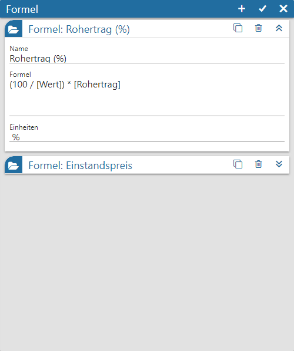
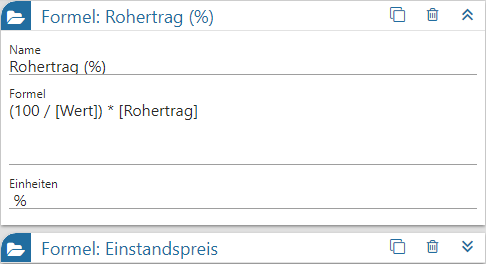
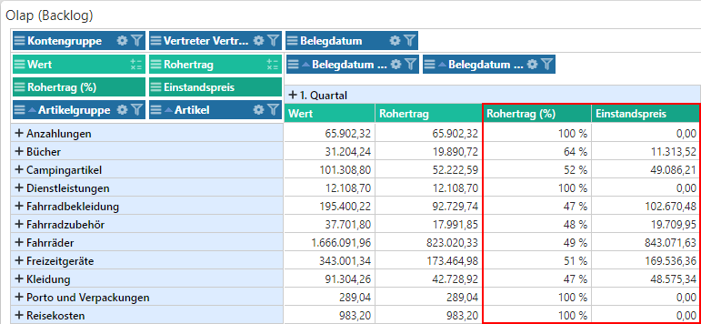

Mit Hilfe von Formel können individuelle Berechnungen im Widget Power Report - Widgets - Olap erstellt werden. Diese werden in der Folge als Datenfelder des Typs "Measures" dargestellt und können in gewohnter Weise eingebunden werden.
Hinweis
Der Aufruf des Fensters erfolgt über die Einstellungen des Olap-Widgets (Button "Formel").

Mit Hilfe der folgenden Einstellungen können x unterschiedliche Formel hinterlegt werden.
Formeln

Im Formelbereich sind folgende Tätigkeiten möglich:
ü Neue Formel anlegen
Durch
Anwahl des Buttons  wird eine neue
Formel eingefügt.
wird eine neue
Formel eingefügt.
ü Formel editieren
Um eine Formel
zu editieren wird diese durch Anwahl des Icons  zunächst aufgeklappt. Anschließend
können die gewünschten Anpassungen vorgenommen werden.
zunächst aufgeklappt. Anschließend
können die gewünschten Anpassungen vorgenommen werden.
ü Formel kopieren
Soll eine
bestehende Formel als Ausgangspunkt für ein neue dienen, so kann eine Kopie
durch Anwahl des Icons  erzeugt
werden.
erzeugt
werden.
ü Formel löschen
Wenn eine Formel
gelöscht werden soll, so kann dieses durch Anwahl des Icon  erfolgen.
erfolgen.
Pro Formel stehen folgende Einstellungen zur Verfügung:
Ø Name
Über dieses Eingabefeld wird die Formeln mit einem eindeutigen Namen versehen.
Ø Formel
An dieser Stelle erfolgt die Hinterlegung der gewünschten Berechnungen, z.B. zur Ermittlung von Prozentsätzen. Neben dem manuellen Schreiben der Formel, steht ein Assistent zum Einfügen von Olap-Measures zur Verfügung, welcher durch Eingabe eines . (Punkt) aktiviert wird (auf andere Formeln kann nicht zugegriffen werden).
Hinweis
Measures werden stets in [ ] (eckige Klammern) eingefasst, wobei pro Formel eine Measure nur 1x vorkommen darf! Sollten komplexere Formeln mit Bedingungen gewünscht sein, so ist als Syntaxsprache JavaScript zu verwenden. Ein Zugriff auf Dimensionen ist nicht möglich.
Beispiele
ü (100 / [Wert]) *
[Rohertrag]
Es soll der prozentuale Anteil des Rohertrags vom Wert
dargestellt werden. Der Wert steht in der Measure [Wert], der Rohertrag
wiederum in deer Measure [Rohertrag].
ü let W = [Wert]
let R =
[Rohertrag]
let RP = (100 / W) * R
if (RP == 100)
{
0;
} else {
(W -
R);
}
Es soll der Einstandspreis durch eine Subtraktion von
[Wert] und [Rohertrag] ermittelt werden (W - R). Sollte der
%-Rohertrag wiederum 100 betragen (RP == 100), so muss die Formel direkt
0 ausgegeben. Da für die Formel die Measures mehrfach benötigt werden,
aber pro Formel eine Measure nur 1x vorkommen darf, wird mit let
gearbeitet.

Ø Einheit
Für den Zahlenwert im Olap kann hier ein Zusatz definiert werden, d.h. was "ist" die Zahl (z.B. %).
Buttons

Ø neue Regel
Durch Anwahl des Buttons wird eine neue Regel eingefügt, wobei
alle Regel- und Formatierungseinstellungen dem Standard entsprechen.
Ø Ok
Durch Anwahl des Buttons "Ok" werden die Regeln gespeichert und das Fenster geschlossen. Angewendet werden diese (neuen) Formatierungen bei der nächsten Aktualisierung des Olaps.
Ø Ende
Durch Anwahl des Buttons "Ende" wird das Fenster geschlossen und nicht gespeicherte Änderungen verworfen.